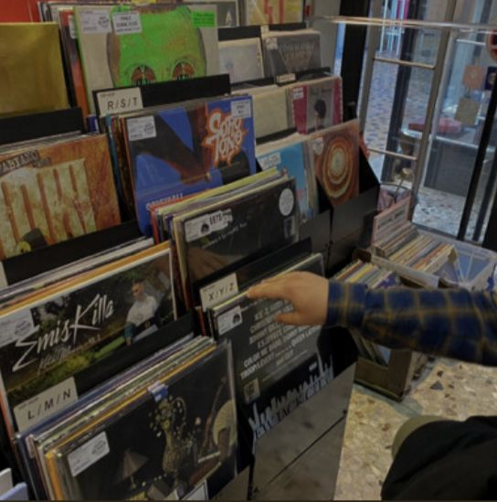
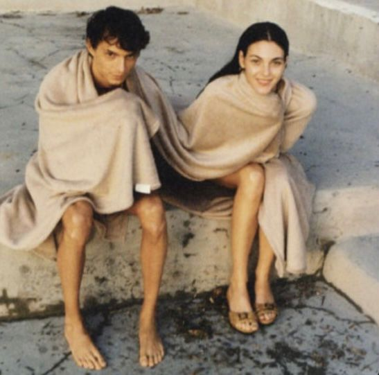
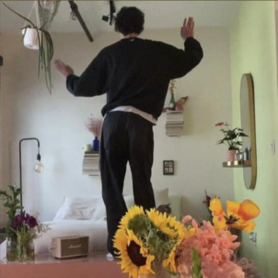

Playlist Archive
Ecco alcune playlist che ho creato seguendo i miei gusti personali e le vibes da condividere con i miei amici e amiche...
Sotto ad ogni playlist troverai una breve descrizione in modo tale da facilitare la tua ricerca,
inizia ad ascoltarle anche tu!
Party time
Grooving with the girls
La playlist perfetta per ballare fino l'ultima briciola di energia presente nel proprio corpo. Un mix di cultura pop degli anni '90 fino alle ultimissime canzoni del momento, utilizzala per creare un'atmosfera in cui nessuno potrà fare a meno di cantare e scatenarsi!
link alla playlist
Blow it all away
Si tratta di una playlist nata in collaborazione con una mia amica per "soffiare via" il malumore. Questa compilation di brani è stata pensata per le feste in spiaggia con amici, occhiali da sole, cocktail tra le mani, camice bagnate dai costumi non ancora del tutto ascutti, capelli ancora salati dall'ultimo bagno della giornata, pelle color bronzo e un tramoto dorato sul mare come ciliegina sulla torta.
link alla playlist
Hit the road
Throwbacks
A chi non manca la spersieratezza con cui si cantavano le canzoni dell'adolescenza? Questa playlist offre un ventaglio di ricordi inconfondibili da rivivere e duettare con i propri amici, falla partire in macchina e rendi memorabile dal più piccolo al più lungo dei viaggi.
link alla playlist
Ochresofa
Capelli al vento, finestrini abbassati, musica al massimo volume, accompagnati dalla sola strada e il tramonto che rende tutti i colori più caldi e più vivi. Questa playlist raccoglie brani che vanno dal pop, all'indie e - per finire - al soft rock.
link alla playlist
Relaxing room
It comes in waves
La routine e il lavoro stanno diventando troppo stretti? Ecco una raccolta di canzoni che puoi utilizzare per staccare un po' la testa. Si tratta di una compilation di brani dal ritmo picevole e delicato come una carezza di prima mattina. Perfetta per creare un'ambiente intimo ed è indicata anche come sottofondo durante sessioni di meditazione o di yoga.
link alla playlist
Fine as old wine
Una playlist dal profomo dei vecchi tempi. Qui potrai essere cullato da brani che variano dal blues, al jazz, al soul e fino al cantautorato italiano con artisti di fama mondiale. Adatta per colorare l'atmosfera d'aperitivo/apericena o per gustarsi in accappatoio e turbante un ottimo calice di vino alla fine di una lunga giornata.
link alla playlist
Based on the season
Water blinking
Una nuovissima playlist che urla "Estate!". Impossibile resitere al suono dell'ukulele e allo sciabordio delle onde infrangersi sulla riva. Ebbene, questa è una delle playlist di cui vado più fiera. Con questa sentirai esploderti dentro il cuore la voglia di mare, di sole e di spensieratezza (cosa che ci è particolarmente mancata dopo l'arrivo del Covid). Si tratta di una raccolta di canzoni che ti trasporterenno totalmente in un altra dimensione di benessere, serenità e allegria, ascoltare per credere!
link alla playlist
What Autumn brings
Ma hai presente quella sensazione di malinconia che mette la stagione autunnale? Senti il bisogno di colmare quel vuoto lasciato dalla stagione precedente o anche solo di piangerti un pochino addosso? Ecco la playlist adatta per spolverarti di dosso la sabbia estiva ed iniziare ad apprezzare il rumore delle foglie sotto i piedi, il calore di una dolce tisana e la morbidezza maglioncini larghi.
link alla playlist
Spring breeze
Ovunque ti giri senti la terra che si sta piano piano risvegliando. Lo vedi con i primi boccioli colorati, lo senti con il primo cinguettare dei passeri e con quella voglia di uscire e di non fare più ritorno a casa. Questa playlist è un mix di canzoni pop che profumano di primavera, perfetta per dare tono ad un picnic in compagnia di amici.
link alla playlist
Damn
"Damn" è una playlist che può essere ascoltata in ogni momento della giornata: dalla passeggiata alla pausa caffé, dall'allenamento alla soccia. Presenta canzoni sobrie come "Summertime" di Mahalia Jackson a quelle più vivaci come "Heartless" di Kanye West.
link alla playlist
CONDIVIDI ANCHE TU!
Aggiungi le playlist o le canzoni che hanno accompagnato i tuoi momenti speciali, quelle che ti hanno fatto emozioare, che ti hanno fatto ballare e che hanno accompagnato i tuoi lunghissimi viaggi in macchina!